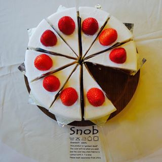
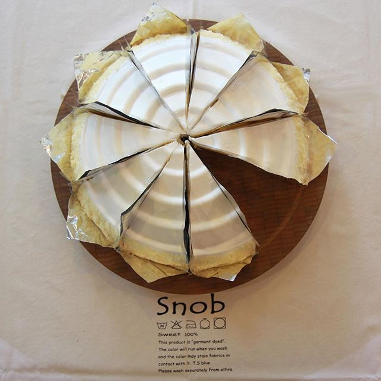
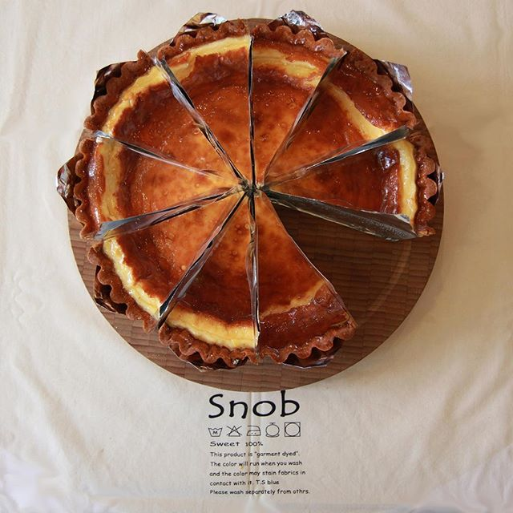

진한 다크초코크림이 아닌 적당히 단 밀크 초콜릿으로 만든 초코 케이크입니다. 안에 호두가 들어가니 견과류 알러지가 있으신분은 참고해 주세요! 예약 하실때 견과류는 빼달라고 말씀해 주시면 빼드릴 수 있습니다.
<cake menu>
모든 케이크는 카페에서 직접 만드는 수제케이크 입니다.
예약은 최소 2~3일 전부터 가능하며 예약자에 한에서 케이크 위에 글씨도 써드리고 있으니 많은 예약 부탁드려요:)
자세히 보고싶은 케이크의 이름을 누르면 해당하는 곳으로 빠르게 넘어갈 수 있습니다.
딸기 케이크 시트론 케이크 초코 케이크
치즈 케이크 티라미수 계절 과일 타르트
<딸기 케이크>

12~5월에 나오는 시즌메뉴 입니다.
커스타드와 딸기가 듬뿍 올라가 다른곳보다 더 부드러운 케이크를 입니다.
<시트론 케이크>

레몬 커스터드가 들어간 시트론 케이크는 상큼한 케이크를 원하시는 분께 추천드립니다.
<치즈 타르트>

끼리 크림치즈를 아낌없이 넣어 가볍지 않고 진한 맛의 치즈맛을 느끼실 수 있습니다.